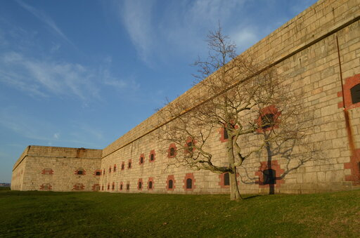
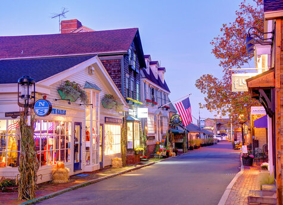
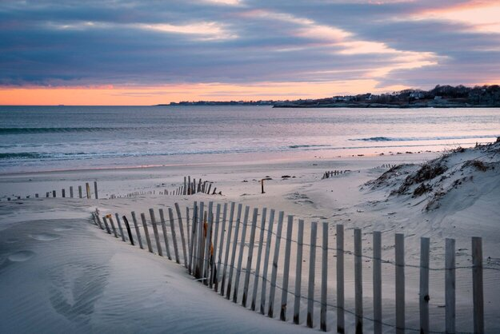
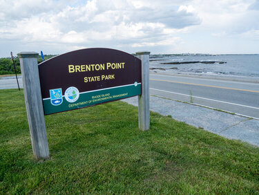
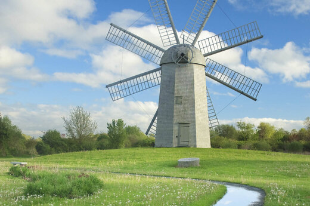
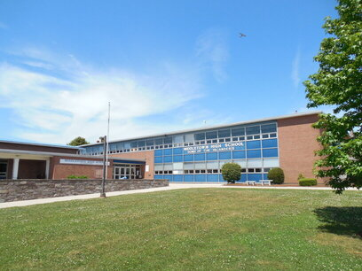
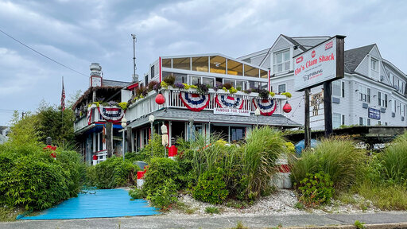

Aquidneck Island
Chamber of Commerece
☰
Home
Discover
Join
Directory
Contact
Aquidneck Island Discoveries!

Fort Adams, Newport
Fort Adams, Newport

Downtown Newport, Newport

Beaches, Middletown
Lighthouse, Newport
Newport Bridge, Newport

Brenton Point, Portsmouth

Windmill, Middletown

Middletown High School, Middletown

Flo's Clam Sack, Middletown